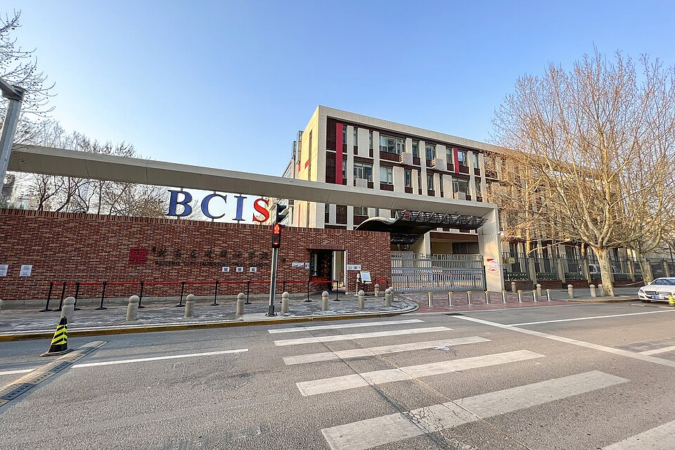

베이징 시티 인터내셔널 스쿨 차오양구 캠퍼스 · 사진: N509FZ / Wikimedia Commons, CC BY-SA 4.0
베이징 시티 인터내셔널 스쿨(BCIS) — 순이구가 아니라 도심에 있는 국제학교
⚠️ 혼동 주의 — 베이징에는 이름이 비슷한 학교가 여럿입니다. 이 글은 베이징 시티 인터내셔널 스쿨(BCIS, 중국어 교명 北京乐成国际学校)이고, ISB 베이징(인터내셔널 스쿨 오브 베이징)·덜위치 칼리지 베이징·WAB와는 다른 학교입니다. 앞의 세 곳은 교외 순이구 쪽이고 이 학교는 차오양구 도심이라 통학 계산이 완전히 다릅니다. 한국어 후기를 읽으실 때 어느 구(區)에 있는 학교 이야기인지부터 확인하세요.
1. 어떤 학교인가
베이징 시티 인터내셔널 스쿨은 2005년에 문을 연 것으로 알려진 비영리 사립 국제학교입니다. 중국어 교명은 北京乐成国际学校이고, 위치는 차오양구(朝阳区)입니다. 본 캠퍼스는 바이쯔완(百子湾) 일대에 있고, 유아 과정과 저학년을 위한 캠퍼스가 따로 있는 것으로 안내됩니다.
받는 연령대는 유아 과정부터 12학년까지입니다. 교육과정은 IB 전 과정으로 소개됩니다.
· 초등 — IB PYP(초등 과정)
· 중등 — IB MYP(중등 과정)
· 11·12학년 — IB 디플로마(DP)
인증은 IB 월드스쿨이며, 이와 별도로 WASC(미국 서부 학교·대학 협회)와 CIS(국제학교협의회) 인증을 받은 것으로 소개됩니다. 중국·몽골 지역 국제학교 협의체인 ACAMIS의 회원으로도 안내됩니다. 인증이 왜 중요한지는 나고야 인터내셔널 스쿨 글에 자세히 정리해 두었습니다 — 요약하면 졸업 뒤 대학 지원 자격을 보는 눈이 달라질 수 있기 때문입니다(다만 자동으로 인정되는 것이 아니고 대학별 요강이 다릅니다).
언어 쪽에도 특징이 있습니다. 이 학교는 영어와 중국어를 모두 제1언어 갈래로 운영하고, 제2언어로는 영어·중국어·스페인어를 안내합니다. 즉 중국어를 "외국어 한 과목"으로만 다루는 학교가 아닙니다.
※ 학생 수·학비·연도별 시험 결과처럼 해마다 달라지는 수치는 이 글에 적지 않았습니다. 캠퍼스 구성과 받는 학년, 개설 과목은 바뀔 수 있으니 학교 입학처에 직접 확인하세요.
2. 이 글의 핵심 — 순이구냐 도심이냐가 집을 정합니다
베이징에 오시는 한국 가정이 가장 자주 하시는 실수는 순서입니다. 회사가 숙소를 먼저 잡아 주거나, 한국인이 많은 동네를 먼저 고르고 그다음에 학교를 찾습니다. 그런데 베이징은 도시가 넓고 출퇴근 시간대 정체가 심해서, 집을 먼저 정하면 통학 가능한 학교가 사실상 몇 곳으로 줄어듭니다.
| 비교 | 순이구(교외) 쪽 | 차오양 도심 쪽(이 학교) |
|---|---|---|
| 학교 선택지 | 여러 곳이 모여 있음 — 비교해서 고를 수 있음 | 생활권 안의 국제학교 수가 적음 |
| 주거 형태 | 단독·타운하우스 단지가 많음 | 아파트 위주 |
| 근무지와의 거리 | 도심 근무면 부모의 출퇴근이 길어짐 | 업무 지구와 가까움 |
| 아이의 하루 | 학교가 가까우면 저녁 시간이 길어짐 | 도심 정체에 따라 편차가 큼 |
| 먼저 할 일 | 학교 후보 2~3곳을 먼저 정하고, 그 학교 통학 범위 안에서 집을 봅니다 — 반대로 하지 마세요 | |
표의 마지막 줄이 이 글에서 가장 실용적인 부분입니다. 임차 계약은 보통 2~3년이고, 중간에 옮기면 비용이 큽니다. 계약 전에 그해 통학 버스 노선표를 학교에서 받아 후보 주소를 대조해 보셔야 합니다. 통학 전반은 통학·스쿨버스 글에 정리해 두었습니다.
3. 또 하나의 차이 — 함께 다니는 학생층이 다릅니다
중국 본토의 국제학교는 보통 외국 국적 자녀를 위한 학교라는 별도 범주로 운영되고, 등록 자격이 정해져 있습니다. 그런데 BCIS는 차오양구 교육 당국에 등록돼 있어 외국 국적 학생과 중국 국적 학생을 함께 받을 수 있는 것으로 소개됩니다.
한국 가정에 이 차이가 의미하는 것은 두 가지입니다.
· 교실의 언어 구성이 다를 수 있습니다. 중국어를 모국어 수준으로 쓰는 급우가 많다면, 중국어 수업에서 우리 아이가 어느 갈래에 배치되는지가 더 중요해집니다.
· 자리를 두고 함께 지원하는 학생층이 다릅니다. 주재원 가정끼리만 경쟁하는 구조가 아닐 수 있습니다.
⚠️ 이 글로 자격을 판단하지 마세요. 등록 자격은 아이의 국적·체류 상태·그해 규정에 따라 달라집니다. 반드시 학교 입학처에 우리 아이 상황을 그대로 말씀하고 확인하셔야 합니다. 중국 본토 국제학교의 등록 자격 전반은 SCIS 상하이 글에 따로 정리해 두었습니다.
4. 한국(주재원) 학생이 겪는 어려움 — 구간마다 다릅니다
IB 전 과정 학교는 평가 방식이 이어지는 장점이 있지만, 부모님이 느끼시는 체감은 구간마다 꽤 다릅니다.
| 구간 | 공부·평가 방식 | 먼저 손볼 것 |
|---|---|---|
| 초등 (PYP) | 탐구 중심 — 진도·점수가 눈에 안 보임 | 읽기와 쓰기의 양. 불안해서 문제집을 사기 전에 책부터 |
| 중등 (MYP) | 기준표(criteria)로 채점 | 답이 아니라 근거를 들어 설명하는 문단 |
| 11·12학년 (DP) | 과제와 시험이 2년 내내 동시에 | 기한 관리와 과목 조합 |
| 중국어(전 구간) | 수준별 갈래로 나뉨 | 입학 시 어느 갈래에 배치되는지 확인 |
마지막 줄을 가볍게 보지 마세요. 중국어가 과목 하나 더 늘어나는 것이라는 점을 미리 아셔야 합니다. 한국 학생은 한자어 덕분에 어휘에서 유리한 구간이 있지만, 그 유리함이 쓰기와 성조까지 이어지지는 않습니다. 중국어 과목 전반은 중국어 과외 가이드(HSK·IGCSE Chinese)에 정리해 두었습니다.
5. 그래서 이렇게 준비합니다 — 그리고 베이징이라는 조건
· ① 집보다 학교를 먼저 좁힙니다. 후보 2~3곳 → 통학 범위 확인 → 그 안에서 주거 계약.
· ② 영어는 "회화"가 아니라 "쓰기"부터 봅니다. MYP·DP 모두 근거를 글로 쓰는 능력에서 점수가 갈립니다.
· ③ 수학은 풀이 과정을 영어로 쓰게 합니다. 한국에서 잘하던 아이가 "답은 맞았는데 점수가 낮은" 상황을 가장 많이 겪는 지점입니다.
· ④ 중국어 배치를 입학 상담에서 반드시 물어 두세요. 갈래가 바뀌면 공부량이 달라집니다.
· ⑤ 재등록 시기를 달력에 적어 두세요. 다니고 있어도 자동 진급이 아닙니다. → 재등록(Re-enrollment)
📌 베이징은 한국과 시차가 1시간입니다. 한국 저녁 9시가 베이징 저녁 8시라, 평일 저녁 화상 수업을 잡기 어렵지 않습니다. 통학이 긴 가정은 아이가 집에 도착하는 시각부터 역산해 수업 시간을 잡으시는 편이 좋습니다.
베이징의 다른 선택지와 견주어 보실 분들을 위해 덧붙이면, ISB 베이징·덜위치 칼리지 베이징·WAB 글이 각각 다른 축으로 정리돼 있습니다. 중국 전체 그림은 중국·홍콩 국제학교 안내에서 보실 수 있습니다.
관련 검색어: 베이징국제학교수학과외 · BCIS베이징 · 베이징차오양국제학교 · 베이징국제학교영어과외 · 베이징IB과외
정리
베이징 시티 인터내셔널 스쿨은 2005년 개교로 알려진 차오양구 도심의 IB 전 과정 학교입니다. 베이징 국제학교의 상당수가 교외 순이구에 모여 있는 것과 달리 도심에 있다는 점이 집·통학·부모 출퇴근을 전부 바꿉니다. 또 외국 국적과 중국 국적 학생을 함께 받을 수 있는 등록 구조로 소개돼, 교실 구성과 중국어 배치를 미리 확인하실 필요가 있습니다. 아이가 초등인지 중등인지에 따라 먼저 손볼 것이 완전히 다르니, 30분 무료 수업으로 현재 위치부터 확인해 보시기 바랍니다. (등록 자격·캠퍼스 구성·개설 과목은 바뀔 수 있으니 반드시 학교 요강을 직접 확인하세요.)